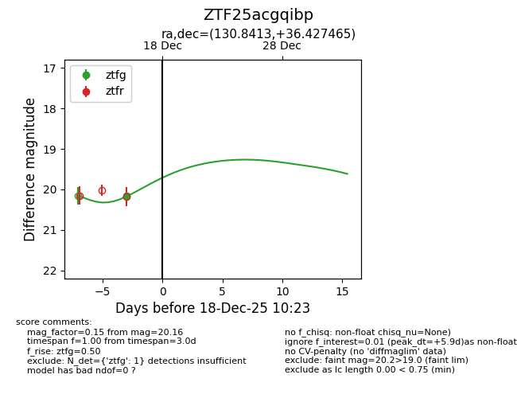
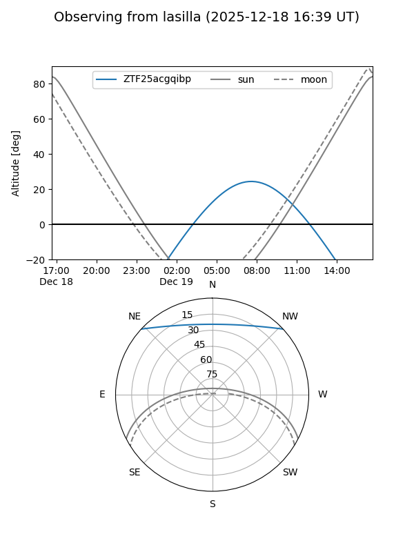
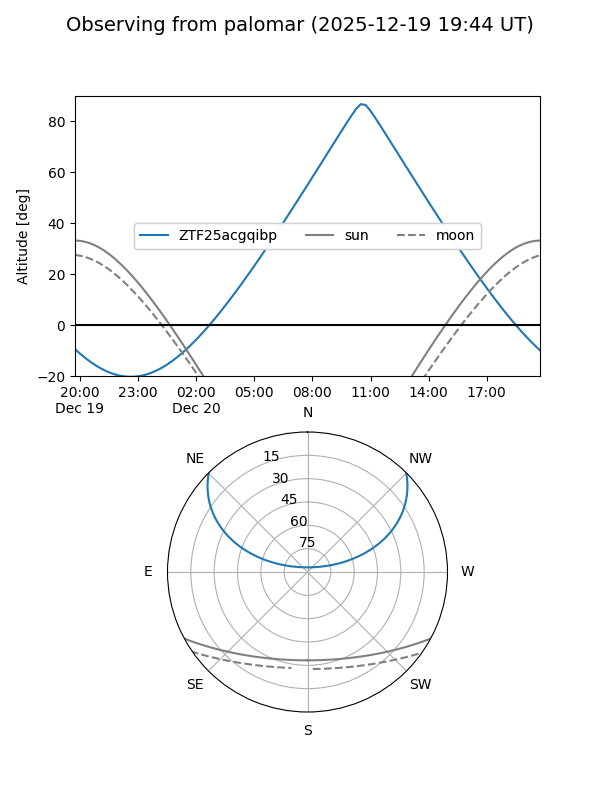
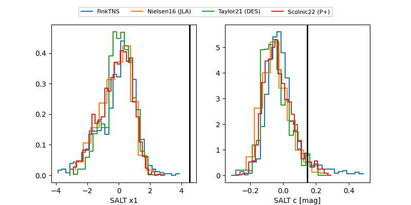

ZTF25acgqibp
Target ZTF25acgqibp at 2025-12-20 14:04
Aliases and brokers:
FINK: fink-portal.org/ZTF25acgqibp
Lasair: lasair-ztf.lsst.ac.uk/objects/ZTF25acgqibp
ALeRCE: alerce.online/object/ZTF25acgqibp
alt names
ZTF25acgqibp (ztf,fink_ztf)
Coordinates:
equatorial (ra, dec) = 130.8413,+36.42746
equatorial (HMS+DMS) = 08:43:21.92,+36:25:38.87
galactic (l, b) = (186.2983,+37.35488)
Flags:
Photometry:
last ztfg=19.98, ztfr=20.14
2 ztfg, 1 ztfr detections
Lightcurve

Visibility


Additional plots
